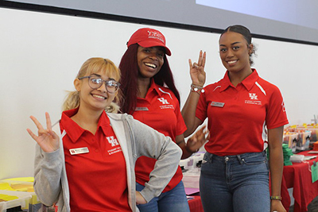

Employment Webpage
Student Employment Information
Learn more about job opportunities for students at the cafeteria.
Join our team and make a difference!
Available Positions:
- Chef: Lead kitchen operations, oversee food quality, and create new menu items.
- Line Cook: Assist the chef in preparing dishes, maintaining kitchen hygiene, and ensuring timely service.
- Server: Provide exceptional customer service, take orders, and deliver meals to guests.
- Barista: Prepare and serve hot/cold beverages, including specialty coffee and tea drinks.
- Cashier: Manage transactions, handle cash registers, and provide friendly customer assistance.
- Dishwasher: Maintain cleanliness of kitchen and dining areas, including washing dishes and utensils.
- Event Coordinator: Plan and organize special events, including catering services and venue arrangements.

Social Information/Footnote
Follow us on social media for the latest updates!